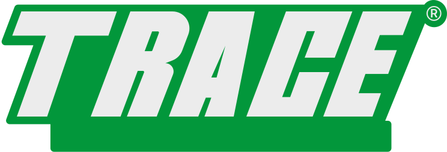
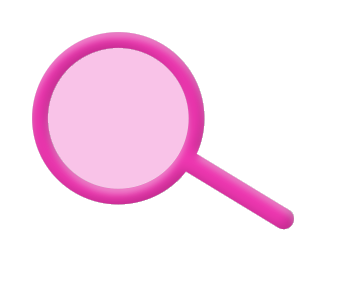

онлайн-сервис о переработке


Карточка дня
загрязнения воздуха обходятся экономике в $ 8.1 трлн. Основной причиной являются расходы на здравоохранение


статьи
обучение
О нас
игра
404
Каждый ловкий твой
бросок сортирует мусорок
Твой шанс на успех


Многоразовая стальная бритва срежет ваши
твёрдый шампунь избил...

Многоразовая стальная бритва срежет ваши

Trace — сортируй выгодно


Сдать вторсырье

бумага

пластик

стекло

одежда
Выбери точку и позаботься
о планете прямо сейчас

Научим Спасать и планету,
и монету

Q1
Что ты делаешь с пластиковыми бутылками от воды/газировки?
Q1
Что ты делаешь с пластиковыми бутылками от воды/газировки?

